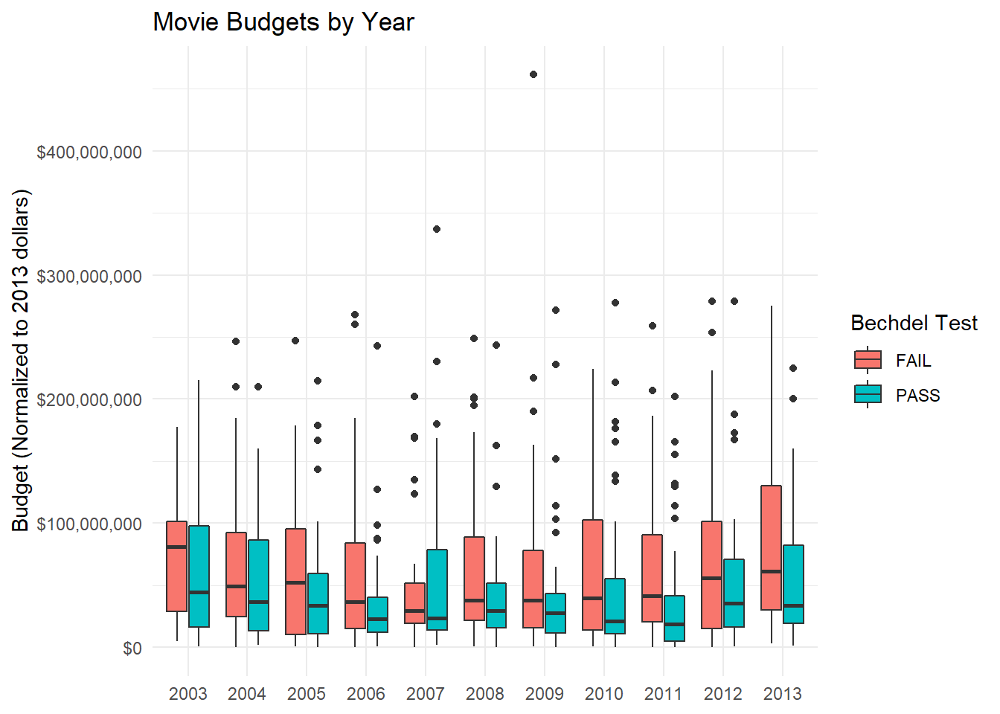
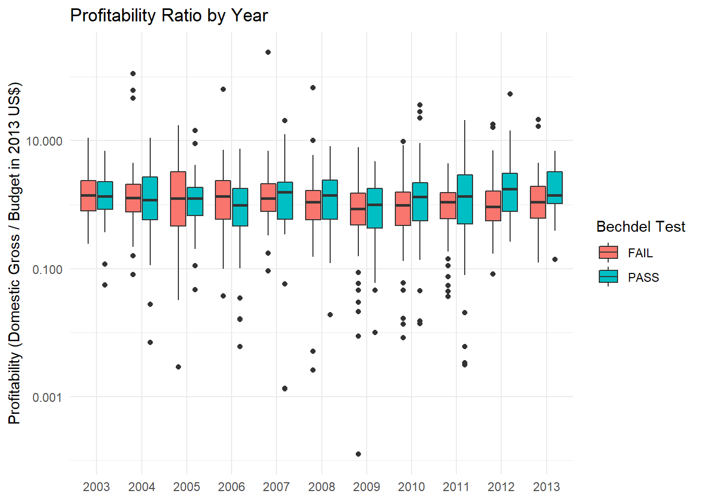
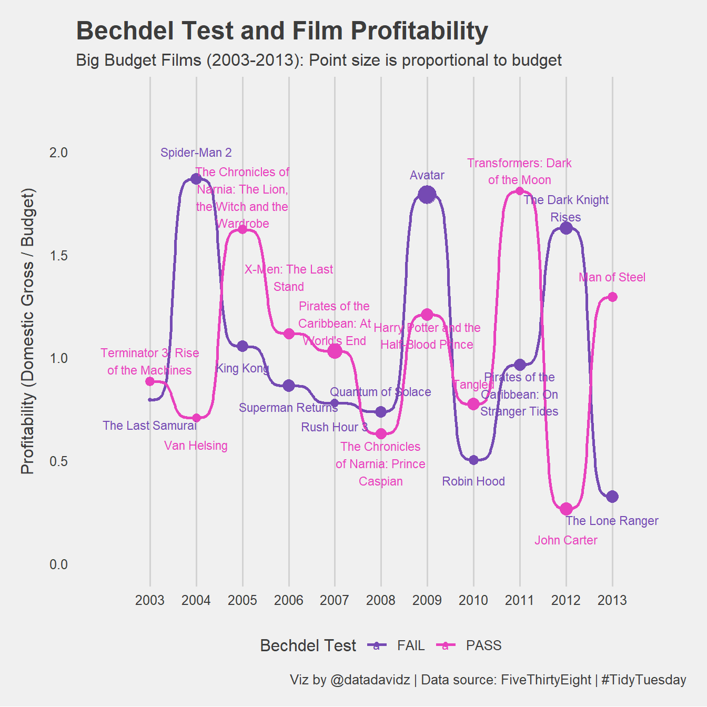

Posted on March 9, 2021
A quick analysis of the weekly #TidyTuesday dataset organized by the R4DS Online Learning Community. My approach is to apply my data science skills to explore one question I have about the data and generate a visualization that addresses this question. The main purpose for me is to practice and try out new things. I am never completely satisfied with the end result but I do the best I can in a short period of time.
What I learned this week about R and the Tidyverse
Brief explanation of the dataset
This week’s dataset contains analysis of movies from 1970-2013 according to the Bechdel test. This test is a measure of gender bias in movies promoted by cartoonist Alison Bechdel. A movie passes the test if there are at least two named women in the picture, they have a conversation with each other at some point and that conversation isn’t about a man. Of course, a “pass” just indicates the female characters are allocated a bare minimum of depth. A good deal of information is available for each movie such as year released, budget, domestic gross, director, genre and the reason why it passed or failed the test.
Initial conclusions from exploring the dataset:
Let’s just focus on the top budget movies each year from 2003 through 2013 that passed and failed the Bechdel test. The budget has been adjusted to 2013 dollars.
big_budget <- movies %>%
filter(year > 2002) %>%
group_by(year, binary) %>%
filter(budget_2013 == max(budget_2013)) %>%
ungroup() %>%
mutate(title = str_replace(title, "'", "'")) %>%
mutate(profit = as.numeric(domgross_2013) / budget_2013)Let’s first look at the budget distribution for all movies in this time span.
movies %>%
filter(year > 2002) %>%
filter(!is.na(budget_2013)) %>%
ggplot(aes(x = as.factor(year), y = budget_2013, fill = as.factor(binary))) +
geom_boxplot() +
scale_y_continuous(labels = scales::dollar) +
labs(title = "Movie Budgets by Year",
x = NULL,
y = "Budget (Normalized to 2013 dollars)",
fill = "Bechdel Test")
Overall, the movies failing the Bechdel test tended to have slightly higher budgets. Focusing on the big budget movies does not reflect the overall trend. Let’s also look at profitability of the movies by taking the ratio of domestic gross to budget with both normalized to 2013 $US.
movies %>%
filter(year > 2002) %>%
filter(!is.na(budget_2013) & !is.na(domgross_2013)) %>%
mutate(domgross_2013 = as.numeric(domgross_2013)) %>%
ggplot(aes(x = as.factor(year), y = domgross_2013 / budget_2013, fill = as.factor(binary))) +
geom_boxplot() +
scale_y_log10(labels = scales::label_number()) +
labs(title = "Profitability Ratio by Year",
x = NULL,
y = "Profitability (Domestic Gross / Budget in 2013 US$)",
fill = "Bechdel Test")
Perhaps, a slight increase in profitability of movies passing the Bechdel test as compared to movies which failed in more recent years. Note that the profitability is plotted with a logarithmic scale in this figure. Now, let’s focus on the top budget movies for each year and their profitability for ones passing the Bechdel test and ones failing the Bechdel test.
big_budget %>%
mutate(title = str_wrap(title, 20)) %>%
ggplot(aes(x = year, y = profit, color = binary)) +
geom_point(aes(size = budget_2013)) +
geom_bump(size = 1) +
geom_text_repel(
data = . %>% group_by(year) %>% filter(profit == max(profit)),
aes(label = title),
size = 3,
direction = "y",
min.segment.length = 1000,
nudge_y = 0.1) +
geom_text_repel(
data = . %>% group_by(year) %>% filter(profit == min(profit)),
aes(label = title),
size = 3,
direction = "y",
min.segment.length = 1000,
nudge_y = -0.1) +
scale_x_continuous(breaks = 2003:2013) +
scale_size_continuous(guide = FALSE) +
expand_limits(x = c(2002, 2014), y = c(0, 2.25)) +
ggthemes::theme_fivethirtyeight() +
theme(axis.title.y = element_text(margin = margin(t = 0, r = 10, l = 0, b = 0)),
panel.grid.major.y = element_blank()) +
fishualize::scale_color_fish_d(option = "Cirrhilabrus_tonozukai") +
labs(title = "Bechdel Test and Film Profitability",
subtitle = "Big Budget Films (2003-2013): Point size is proportional to budget",
y = "Profitability (Domestic Gross / Budget)",
color = "Bechdel Test",
caption = "Viz by @datadavidz | Data source: FiveThirtyEight | #TidyTuesday")
Obviously, a lot is happening in the code to create the visualization above. The points are sized according to the movies budget (in 2013 dollars). The curved lines are created using the geom_bump function from the ggbump package. My main interest in creating this visualization was to show some of the movie names as I thought this is information people could connect with.
There are several issues with showing the names 1) some of the names are rather long, 2) the labels overlap with each other and 3) the labels overlap with the points and lines. I used str_wrap to condense the length of the movie names a bit. I could have also recoded the movie names but decided against this because I wanted to stay connected to the original dataset. I used the geom_text_repel function from the ggrepel package to help avoid overlapping of the labels. The main issue after applying ggrepel however was that generally the labels were over top of the points (but not always) and there was a lot of intersections with the ggbump lines. To address this issue, I decided to subset the top points from the bottom points and handle them separately within geom_text_repel. The nudge_y parameter allowed me some control over the position of the labels while still using the functionality of ggrepel to avoid overlapping of labels. The overall effect was acceptable but still not optimal as there are issues with overlapping labels and lines.
The data visualization did not show a clear trend in the big budget movies passing vs. failing the Bechdel test. Big budget films such as Avatar and Spiderman 2 failed the Bechdel test but were incredibly profitable. Transformers: Dark of the Moon passed the test and was also very profitable. Both movies passing or failing the Bechdel test also had examples of low profitability. I had some reservations about posting this visualization on Twitter but it actually received the highest “likes” yet for one of my TidyTuesday posts. I attribute this result to people connecting with the listed movies in some way.
A work by datadavidz